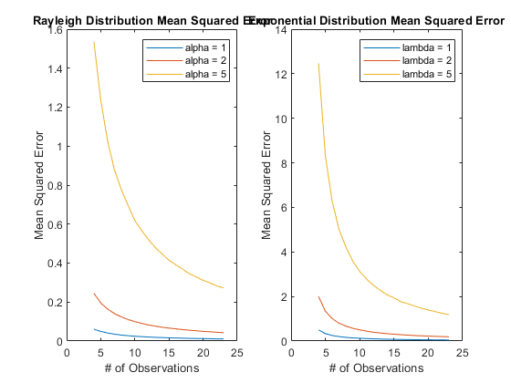
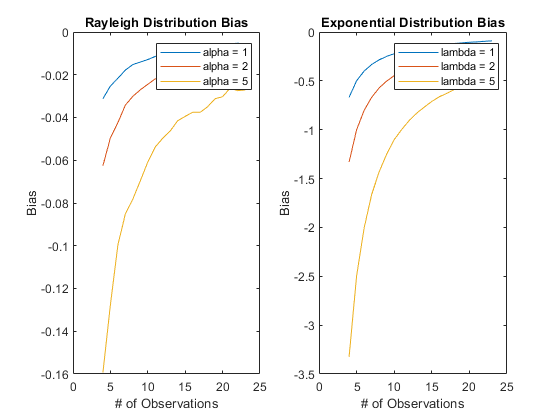
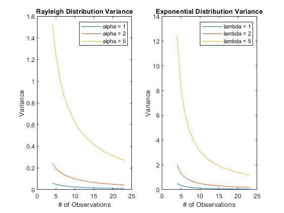

Contents
clear;
clc;
close all;
Part 1: Exponential and Rayleigh Samples
alphaOrLambda = [1, 2, 5];
rayleighMSE = zeros([3, 20]);
rayleighBIAS = zeros([3, 20]);
rayleighVAR = zeros([3, 20]);
exponentialMSE = zeros([3, 20]);
exponentialBIAS = zeros([3, 20]);
exponentialVAR = zeros([3, 20]);
for j = 1:3
for i = 1:20
[rayleighMSE(j, i), rayleighBIAS(j, i), rayleighVAR(j, i)] = rayleighDist(i, alphaOrLambda(j));
[exponentialMSE(j, i), exponentialBIAS(j, i), exponentialVAR(j, i)] = exponentialDist(i, alphaOrLambda(j));
end
end
graphing(rayleighMSE, exponentialMSE, "Mean Squared Error")
graphing(rayleighBIAS, exponentialBIAS, "Bias")
graphing(rayleighMSE, exponentialMSE, "Variance")
  
Part 2: Find Best Graph for given data
givenData = load('data.mat').data;
alphaGuess = sqrt(.5.*(mean(givenData.^2)));
lambdaGuess = 1000 / (sum(givenData));
rayLogLikelihood = sum(log(raylpdf(givenData, alphaGuess)));
expLogLikelihood = sum(log(exppdf(givenData, 1/lambdaGuess)));
fprintf('The Rayleigh Distribution Log Likelihood Value was: %f \n', rayLogLikelihood);
fprintf('The Exponential Distribution Log Likelihood Value was: %f \n', expLogLikelihood);
fprintf('Thus, these samples likely came from a Rayleigh Distribution! \n');
The Rayleigh Distribution Log Likelihood Value was: 1365.516070
The Exponential Distribution Log Likelihood Value was: 1053.462453
Thus, these samples likely came from a Rayleigh Distribution!
Functions
function graphing(data1, data2, Title)
x = 4:23;
figure;
subplot(1, 2, 1)
plot(x, data1(1, :), x, data1(2, :), x, data1(3, :))
title("Rayleigh Distribution " + Title);
ylabel(Title);
xlabel("# of Observations");
xlim([0, 25])
legend("alpha = 1", "alpha = 2", "alpha = 5")
subplot(1, 2, 2)
plot(x, data2(1, :), x, data2(2, :), x, data2(3, :))
title("Exponential Distribution " + Title);
ylabel(Title);
xlabel("# of Observations");
xlim([0, 25])
legend("lambda = 1", "lambda = 2", "lambda = 5")
end
function [MSE, bias, variance] = rayleighDist(obs, alpha)
N = 100000;
ray = raylrnd(alpha, N, obs + 3);
avgObs = mean(ray.^2, 2);
alphaGuesses = sqrt(.5.*avgObs);
MSE = mean((alpha-alphaGuesses).^2);
bias = mean(alphaGuesses) - alpha;
variance = var(alphaGuesses);
end
function [MSE, bias, variance] = exponentialDist(obs, lambda)
N = 100000;
exp = exprnd(1/lambda, N, obs + 3);
sumObs = sum(exp, 2);
lambdaGuesses = obs ./ (sumObs);
MSE = mean((lambdaGuesses-lambda).^2);
bias = mean(lambdaGuesses) - lambda;
variance = var(lambdaGuesses);
end